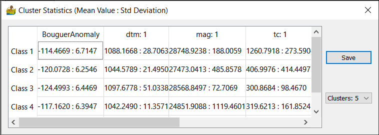
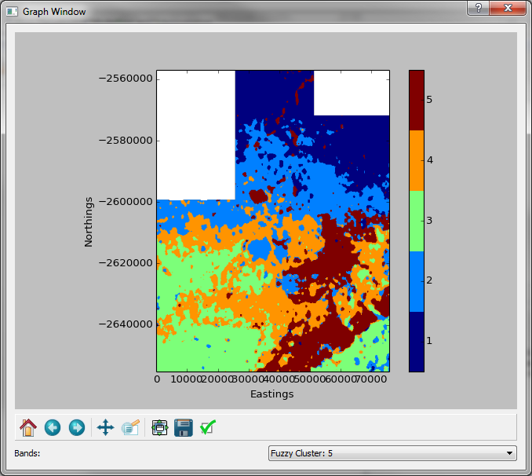
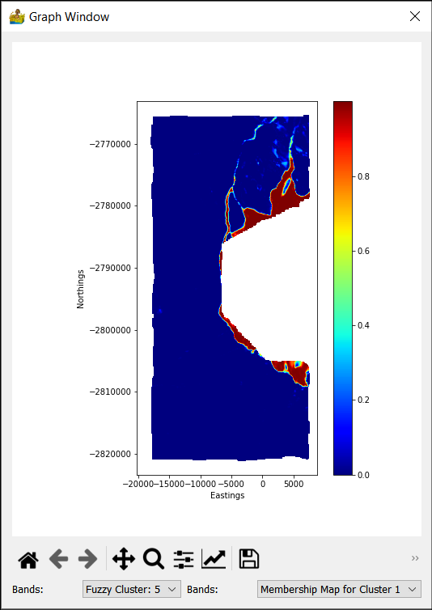

Classification: Context Menu¶
The classification context menus are available for modules which have output clustering data. Output data is only available on green modules. To access the context menu, simply right-click a green module.
Cluster Statistics¶
Cluster statistics show the central value of each cluster with respect to each band of data, as well as the associated standard deviation.
Show Class Data¶
This provides a quick graphical representation of the output of the cluster analysis
Show Membership Data (Fuzzy Only)¶
This relates to fuzzy cluster analysis. It shows in graphical form, the membership of each cluster.
Show OBJ, VRC, NCE, XBI Graphs¶
This information relates to comparisons between cluster analysis runs over different numbers of classes. If, for example, a crisp cluster run has a minimum of 5 and maximum of 7 classes, then 3 solutions are produced; one with 5, one with 6 and one with 7 classes. This context menu displays information in graphical form which can assist in determining the optimal number of classes present in the data.
The following graphs are produced:
Objective Function (OBJ) as a 3D graph
Variance Ratio Criterion (VRC) as a 2D graph
Normalized Class Entropy (NCE) as a 2D graph
Xie-Beni Index (XBI) as a 2D graph
Export Class Data¶
This exports the output cluster data in a variety of different formats for use in other software.